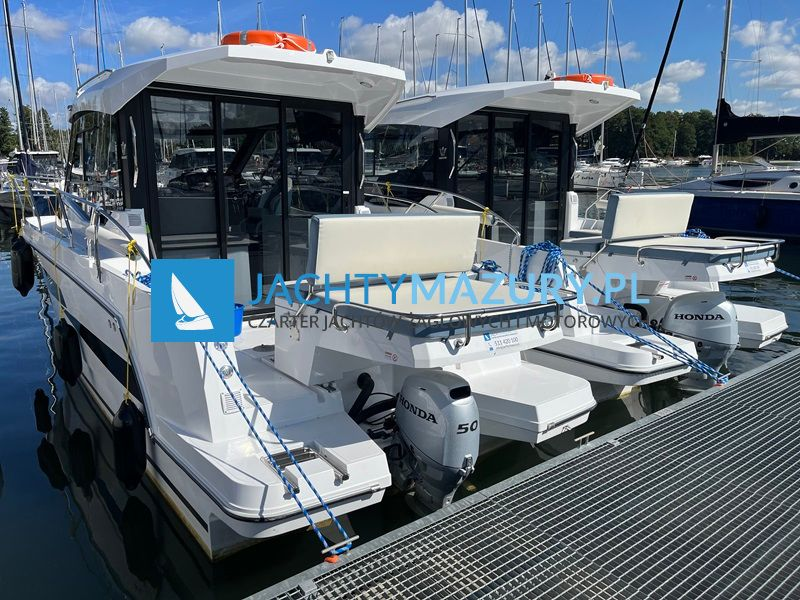

Nautic 880„Cuba Libre”
- Miejsca
- 4 + 2
- Kabiny
- –
- Zanurzenie
- –
- Rok produkcji
- 2023
Długość całkowita9,00 m
Cenana zapytanie

Jachty motorowe · 2 jednostki
Nautic 880 to nowoczesny jacht motorowy klasy turystycznej, zaprojektowany z myślą o komfortowym pływaniu rekreacyjnym. Model łączy przestronny układ wnętrza z dynamicznymi osiągami i stabilnym prowadzeniem.
Jednostka wyróżnia się funkcjonalnym kokpitem, wygodną sterówką oraz dobrze zaprojektowaną przestrzenią pod pokładem. To konstrukcja skierowana do osób, które oczekują wygody zbliżonej do małego apartamentu na wodzie, bez rezygnowania z osiągów.
Poniżej znajdziesz szczegółowe informacje: Nautic 880 dane techniczne, wymiary, wnętrze, koje, ilość osób oraz orientacyjną cenę.
Najważniejsze parametry modelu:
• Długość całkowita: 9,17 m
• Szerokość: 3,00 m
• Wysokość całkowita: 2,65 m
• Zanurzenie: 0,65 m
• Liczba kabin: 2
• Maksymalna liczba osób: 6
• Masa: od 2900 kg (bez silnika)
• Pojemność zbiorników: paliwo 160 l, woda 100 l, fekalia 100 l
Te dane techniczne sprawiają, że Nautic 880 jest jednostką stabilną, szybką i komfortową w użytkowaniu. Odpowiednia szerokość oraz proporcje kadłuba zapewniają dobrą kontrolę przy wyższych prędkościach.
Pod względem proporcji Nautic 880 wymiary ma bardzo dobrze zoptymalizowane. Szerokość 3 metrów przekłada się na przestronne wnętrze oraz wygodny kokpit.
Długość 9 metrów zapewnia stabilność kursową oraz odpowiednią ilość miejsca zarówno pod pokładem, jak i na zewnątrz. Jednostka oferuje dużo przestrzeni i bardzo wygodną część zewnętrzną.
Nautic 880 wnętrze zostało zaprojektowane z myślą o komforcie kilkuosobowej załogi. W standardowym układzie znajdziemy:
• dwie dwuosobowe kabiny,
• kabinę łazienkową z toaletą morską i prysznicem,
• mesę z możliwością dodatkowego miejsca do spania,
• w pełni wyposażony kambuz.
Nautic 880 środek jest funkcjonalny i ergonomiczny. Układ pozwala na komfortowe funkcjonowanie podczas kilkudniowych rejsów bez konieczności reorganizacji przestrzeni.
Jedno z najczęściej zadawanych pytań brzmi: Nautic 880 ile osób pomieści?
Model oferuje komfortowe miejsca do spania dla 4 osób oraz możliwość zwiększenia załogi do maksymalnie 6 osób.
Układ koi obejmuje:
• 2 koje w pierwszej kabinie,
• 2 koje w drugiej kabinie,
• dodatkowe miejsca w mesie dla dwóch osób.
Realny komfort zapewnia załoga 4-5 osób. Przy maksymalnej obsadzie 6 osób przestrzeń jest nadal funkcjonalna podczas wakacyjnego rejsu.
Nautic 880 czarter to propozycja dla osób poszukujących jachtu motorowego o większym komforcie i wyższych osiągach.
Dzięki stabilnej konstrukcji i nowoczesnym rozwiązaniom technicznym jednostka zapewnia bezpieczne oraz przewidywalne prowadzenie.
Cena czarteru uzależniona jest od terminu oraz długości rejsu.
W sezonie wysokim stawki są wyraźnie wyższe niż w okresach przed i posezonowych. Pełen cennik jednostek Nautic 880 dostępnych w naszej flocie znajduje się w zakładce cennik. Przy krótszych lub dłuższych czarterach ceny ustalane są indywidualnie.
Jeśli szukasz jachtu motorowego:
• komfortowego dla 4–6 osób,
• z dwiema zamykanymi kabinami,
• z pełną łazienką i prysznicem,
• umożliwiającego dynamiczne przemieszczanie się,
• zapewniającego stabilność i bezpieczeństwo,
Nautic 880 będzie bardzo dobrym wyborem.
To model, który łączy wygodę, osiągi i nowoczesne rozwiązania – dlatego cieszy się rosnącą popularnością w segmencie jachtów motorowych średniej wielkości.
Sprawdź, które jachty są wolne, albo zadzwoń do biura.